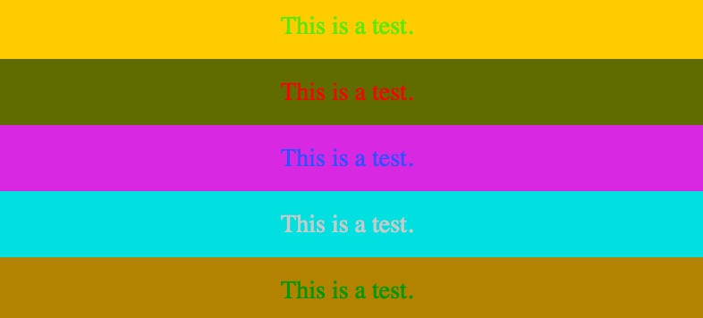
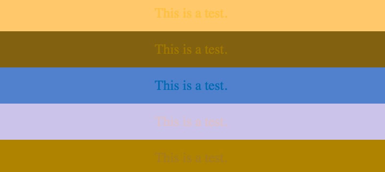

I'm Luke Larsen
verizondigitalmedia.com
We're hiring!
Me
I play old school video games.
I enjoy playing tennis.
And at my day job I write...


I still love CSS.
And it's much getting better to work with.
Why do I love CSS?
There is a lot of cool things going
on in the world of CSS right now.

A tool for transforming CSS with JavaScript
You don't have to break up with your preporcessor if you don't want to.
But you probably will.
Behind PostCSS
Andrey Sitnik
Evil Martians

How does PostCSS work?
Why do I need this?
What can it do?
PostCSS by itself doesn't do anything. So...
Use plugins!
or
Create your own.
(It's pretty easy.)
Popular Plugins
Autoprefixer
:fullscreen a {
display: flex
}
:-webkit-full-screen a {
display: -webkit-box;
display: flex
}
:-moz-full-screen a {
display: flex
}
:-ms-fullscreen a {
display: -ms-flexbox;
display: flex
}
:fullscreen a {
display: -webkit-box;
display: -ms-flexbox;
display: flex
} cssnext
:root {
--red: #d33;
}
a {
&:hover {
color: color(var(--red) a(54%));
}
}
a:hover {
color: #dd3333;
color: rgba(221, 51, 51, 0.54);
}
precss
$blue: #056ef0;
@define-mixin icon $name {
padding-left: 16px;
&::after {
content: "";
background-url: url(/icons/$name.png);
}
}
.search {
@mixin icon search;
background-color: $blue;
}
.search {
padding-left: 16px;
}
.search::after {
content: "";
background-url: url(/icons/search.png);
background-color: #056ef0;
}
Styleguide Generator
/* @start color */
:root {
--red: #e23B00;
--blue: #3f526b;
--black: #000;
--background: #faf8f5;
}
/* @end color */
Color Blind
All Colors
No Green

Spanish Stylesheets
.foo {
redondeado: 3px;
fondo: #fff;
ancho: 300px;
alto: 200px;
flota: izquierda;
arriba: 10px;
abajo: 0px;
izquierda: 100px;
derecha: 100px;
espaciado: -1px;
puntero: manito !importantisimo;
text-transform: mayuscula;
}
.foo {
border-radius: 3px;
background: #fff;
width: 300px;
height: 200px;
float: left;
top: 10px;
bottom: 0px;
left: 100px;
right: 100px;
letter-spacing: -1px;
cursor: pointer !important;
text-transform: uppercase;
} Others
- Source Maps
- Font Loading
- Style Linters
- Cache Busting
- Right to Left
- Sort Rules
- BEM Linter
- CSS Optimizations
- SVG Optimizations
- See them all at postcss.parts
How do I use this PostCSS magic?
It suports all the build tools.
- HTML
- Stylus
- Rollup
- Brunch
- Broccoli
- Meteor
- ENB
- Fly
- Start
- Express
Demo
Setting up Autoprifixer and a grid system
Creating a plugin
Plugin Wrapper
var postcss = require('postcss');
module.exports = postcss.plugin('myplugin', function myplugin(options) {
return function (css) {
options = options || {};
// Processing code will be added here
}
});
Rule
.disappear{
display: none;
}
Declaration
display: none;
Property
display:
Value
none;
Loop through Rules and Declarations
css.walkRules(function (rule) {
rule.walkDecls(function (decl, i) {
});
});
Do something when we find a certain declaration
var value = decl.value;
if (value.indexOf('disappear') !== -1) {
// Insert disappear css
decl.cloneBefore({ prop: 'display', value: 'none !important' });
decl.cloneBefore({ prop: 'visibility', value: 'hidden' });
// Remove original declaration
decl.remove();
}
All together
var postcss = require('postcss');
module.exports = postcss.plugin('myplugin', function myplugin(options) {
return function (css) {
options = options || {};
css.walkRules(function (rule) {
rule.walkDecls(function (decl, i) {
var value = decl.value;
if (value.indexOf('disappear') !== -1) {
// Insert disappear css
decl.cloneBefore({ prop: 'display', value: 'none !important' });
decl.cloneBefore({ prop: 'visibility', value: 'hidden' });
// Remove original declaration
decl.remove();
}
});
});
}
});
Original CSS
.disappear{
display: disappear;
}
Compiled CSS
.disappear{
display: none !important;
visibility: hidden;
}
Solving the Global Problem

A React Button Component
/* Button.js */
import React from 'react'
/* Styles imported as an object with classnames as keys */
import styles from './button.css'
class Button extends React.Component{
render(){
const text = this.props.text
return {
}
}
}
Original CSS
.wrapper{
margin: 10px;
}
.button{
color: white;
padding: 5px 10px;
}
Compiled CSS
.button__wrapper_45xc13{
margin: 10px;
}
.button__button__unye73{
color: white;
padding: 5px 10px;
}
The result
Instead of
Resources
Thank You
@lukelarsen